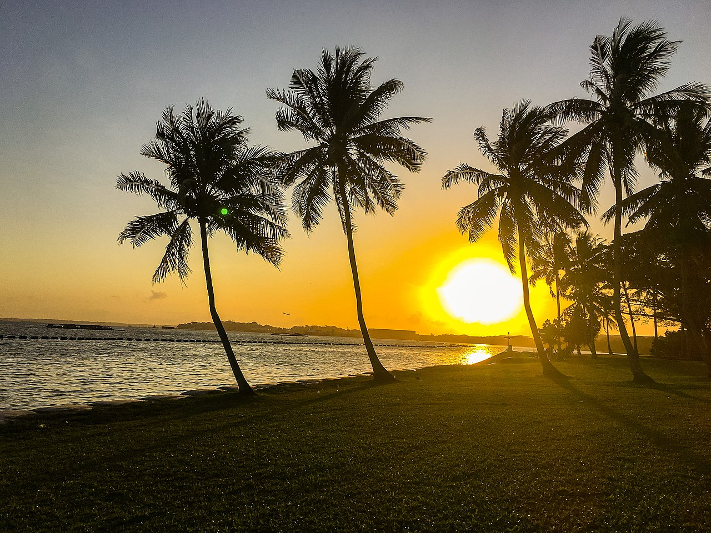

Immerse yourself in nature!
Leave the road, take the trails.
- Pythagoras
"Pasir ris" meaning "beach bolt-rope" in Malay is the perfect description for the Pasir Ris Park, referring to the narrow stretch of sandy beach found at the park. The park includes a secondary forest, mangrove forest, rivers, grassland and a beach, bringing to Pasir Ris Park a variety of wildlife and plants.
There are many things one can do at Pasir Ris Park - birdwatching, exercising, picnicing and many more. This site shares in particular things that nature lovers can expect to find at Pasir Ris Park. Standby your sunscreen and cameras as you embark on this wondrous nature adventure!
Click on any of the pages on the sidebar to get started.